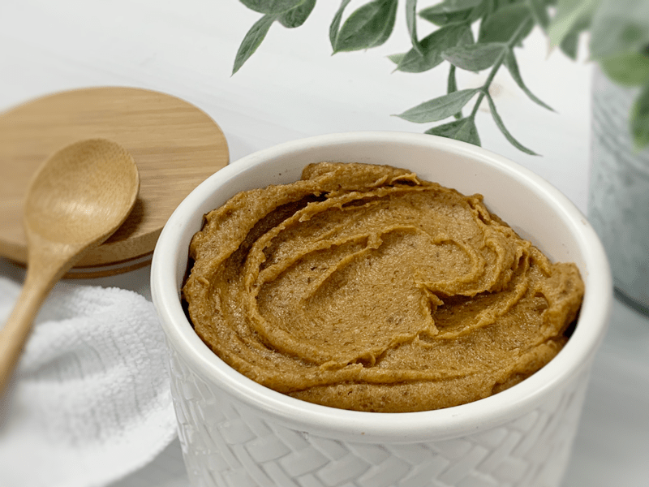
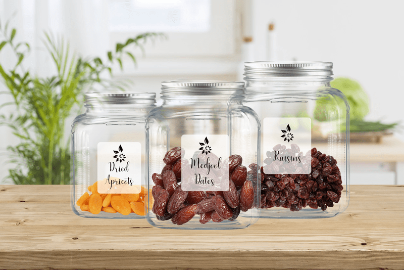
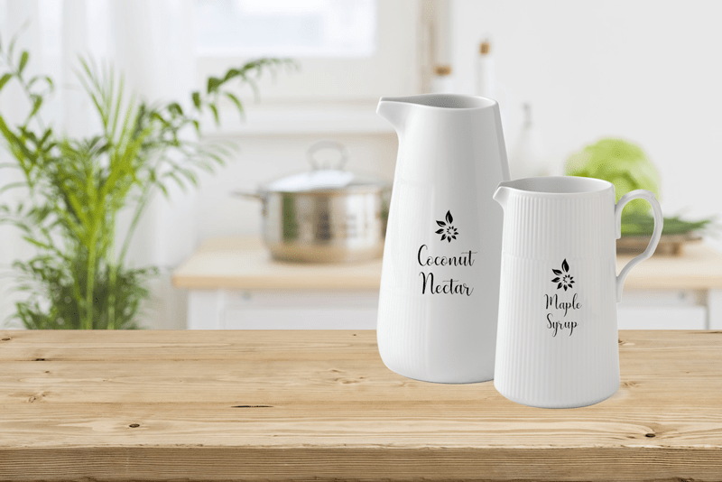

Sweeteners – Substituting and Attributes
We are going to dive right in… When substituting sweeteners, try to replicate the flavor, color, and viscosity the sugar has that you will be replacing. If you need to substitute a liquid sweetener, try to do so with another liquid one. With raw food recipes, it is much easier to make these adjustments than it is with baked goods.
To reduce the amount of sugar in a recipe, I will often cut the sugar in half and add some liquid stevia to elevate the sweetness. You will also see me using a combination of sweeteners in my recipes; I do this because it helps to create different layers of flavor. If you have diabetes or wish to reduce your sugars significantly, I have some suggestions (
here).
DRY POWDERY SWEETENERS

Coconut Crystals / Coconut Sugar
Is it Raw?
- No
- There is a lot of confusion around coconut crystals (Coconut Secrets brand) when it comes to figuring out if it is raw or not. I have been seeking and using raw ingredients since 2007, and back in the day, coconut crystals were considered raw, so it was one of the go-to sweeteners to use. As of April 2017, Coconut Secrets claimed that their coconut crystals were no longer considered “raw.”
- I still use their brand along with other brands of what is most commonly referred to as coconut sugar. If this is an issue for you, then you will want to replace the coconut sugar with something else.
- Coconut sugar is made from the sap of flower buds from the coconut palm tree, not from the coconuts themselves.
Flavor Profile:
- Coconut sugar is very comparable to brown sugar in taste. It has a slight caramel flavor.
- Coconut sugar does NOT taste like coconut.
Consistency:
- Coconut sugar has a dry grainy texture, just like brown sugar.
- To avoid a gritty texture in recipes, I will grind it down to a powder in a spice grinder or my Magic Bullet.
Color:
- Coconut sugar is brown and will add a brown tint to any recipe when used.
Substitution Measurements:
- Coconut sugar can be used in a 1:1 ratio for regular white or brown sugar.
How it might be used:
- I use coconut sugar in recipes where I want a caramel-like flavor.
- I like to use it as a finishing sugar to add color and a cooked appearance to a recipe. I often sprinkle it on top of raw cookies, or I will roll them in it before dehydrating them.
- You can learn more about it (here).
- I like to use (this) brand when at all possible.

Lucuma
Is it Raw?
- Yes and No.
- Some brands are raw, and some are not. Be sure to read labels and research companies.
- Lucuma powder is made from whole fruit.
Flavor Profile:
Consistency:
Color:
Substitution Measurements:
How it might be used:
- It can be used 1:1 for white sugar.
- It can be added to green drinks if you need a little sweetness to help get them down.
- You can sprinkle it over breakfast cereals.
- Create a beautiful nut butter with it. Place about 3 cups of nuts of your choice (such as cashews or macadamia nuts), 2 to 3 teaspoons of lucuma powder, and 1/2 teaspoon of salt in a blender, thus creating a wonderfully tasting nut butter with a slight hint of sweetness.
- It can be used in warm beverages, smoothies, oatmeal, raw cookies, brownies, bars, crusts, etc.
- I often use (this) brand but will use others of quality based on availability.
- Learn more about it (here).

Mesquite Powder
Is it Raw?
- Yes, but there are high-processed brands on the market. Read your labels!
- Mesquite flour is made from the seedpods of the mesquite tree.
Flavor Profile:
Consistency:
- Mesquite powder is light and airy like a flour.
Color:
Substitution Measurements:
How it might be used:
- Mesquite powder can be used as a flour substitute in a lot of recipes. Since mesquite is naturally sweet, you may also want to consider reducing the amount of regular sugar and other sweeteners in your recipe.
- It goes well with cinnamon, cacao, carob, maca, vanilla, and other sweet spices.
- Mesquite and cacao form an excellent flavor pairing, which is why I often use it in my raw cacao chocolate candies.
- Mesquite powder also adds a thick, smooth texture to recipes. It is an excellent addition in smoothies, nut milks, shakes, and ice creams.
- You can learn a bit more about it (here).
- I like (this) brand.
THICKENING & BINDING SWEETENERS

Date Paste
Is it Raw?
-
Yes, if you make your own. It is simple to do, learn how (
here).
- Date paste is a natural, fruit-based sweetener made from dates and water.
Flavor Profile:
Consistency:
Color:
Substitution Measurements:
How it might be used:
- Dates are multipurpose. Not only is it used as a sweetener but also as a binder. When you process dates along with dry ingredients, it binds everything together, which is perfect for raw cookies, sweet crackers, raw breads, bars, and other sweet treats.
- When blended with liquid, it sweetens and thickens, such as in smoothies, sauces, marinades, and salad dressings.

Dried Fruit
Is it Raw?
-
Yes and no.
- You can make your own to control the quality, but some companies do dry their fruits at low temps to keep them raw. Most, however, are NOT raw, so please read labels and research companies if raw is of high importance to you.
Flavor Profile:
Consistency:
Color:
Substitution Measurements:
- It depends on the form that it is being used in (liquid or paste), as well as the sweetness level that you prefer in your foods.
How it might be used:
- Dried fruits, much like date paste, can be used in many ways.
- A few can be blended in smoothies, nut and seed milks, or puddings to give it a slight sweetness.
- Dried fruits can be used as a thickener in syrups and jams.
- They can also be used as a binder in raw cookies, bars, crusts, etc.
- Often it may need to reconstitute in water so that it will blend nicely.
- You can learn more about it (here).

Fresh Fruit & Vegetables
Is it Raw?
Flavor Profile:
Consistency:
Color:
Substitution Measurements:
- You can use carrots, sweet potato, pumpkin, cassava, or yams to add a little sweetness to a recipe.
- In my experience, homemade fruit purees are an excellent option and typically do not affect the rest of the recipe. I generally use 1/2 cup of fruit puree in place of every 1 cup of sugar.
- Overripe fruits (which have a higher sugar count) such as bananas, apples, pears, figs, monk fruit, mangoes, and papayas provide a tremendous amount of sweetness.
- If you are replacing a dry sweetener in a recipe with overripe fruits, I will use a 1:1 ratio.
- If you use fresh fruits and can’t reach the level of sweetness that you want, add a small amount of stevia to elevate the flavors. You can also add flavor enhancers such as orange or lemon zest to bring out the fruitiness in a dish.
How it might be used:
- I have found that using fresh fruit as a sweetener is pretty much a trial and error situation. You will have to experiment and taste test as you build the recipe. Be sure to taste the fruit before adding it, so you understand how sweet it is.

LIQUID SWEETENERS
Agave
Is it Raw?
- No. I started using agave back in 2007 when it hit the raw culinary scene hard. There were claims about it being healthier and raw, but over time things have shifted. Agave syrup is not a “whole” food; it is fractionated and processed. Manufacturers take the liquid portion of the agave plant and “boil” it down, thus concentrating the sugar.
- It is my personal choice not to use agave any further. I replace it with maple syrup when a sweetener with liquid viscosity is needed. I have slowly been changing my recipes to reflect that as well.
Coconut Nectar
Is it Raw?
-
No
- Coconut nectar (Coconut Secrets brand) first debuted as a “raw” sweetener. As of April 2017, Coconut Secrets claimed that their coconut nectar was no longer considered “raw.” I have yet to find a company to make claims that their brand is indeed raw.
- Coconut Nectar is produced from coconut palm blossoms.
Flavor Profile:
- Coconut nectar is mildly sweet and does not taste like coconut.
Consistency:
Color:
Substitution Measurements:
How it might be used:
- It is a marvelous stand-alone to drizzle over sweet treats such as ice cream.
- It blends easily into smoothies, hot drinks, salad dressings, sauces, and other raw treats.
- It adds moisture and sweetness to a raw recipe. It is not a binding sweetener.
- I usually use (this) brand.
- You can learn more about it (here).
Maple Syrup
Is it Raw?
-
No
- Maple syrup is a syrup usually made from the xylem sap of sugar maple, red maple, or black maple trees, as well as other maple species.
- Be sure to look for PURE maple syrup.
Flavor Profile:
Consistency:
Color:
- Maple syrup can vary in color.
- There are four maple syrup grades. From light to dark, they are Fancy, Grade A Medium Amber, Grade A Dark Amber, and Grade B.
Substitution Measurements:
- Use only three-fourths of the amount of maple syrup as sugar in a recipe. For example, if a recipe says to use 1/4 cup of sugar, use 3 tablespoons of maple syrup instead.
- You can use honey in place of maple syrup, but be mindful that the texture of maple syrup is much runnier.
How it might be used:
- Maple syrup is a pourable liquid. Therefore it blends nicely in smoothies, nut milks, sauces, and dressings.
- It adds sweetness as well as moisture to a recipe.
- Often I will use a blend of sweeteners when using maple syrup.
- If you are creating are a recipe that is lighter in color or needs a neutral sweet flavor, you will want to use a Grade A (as mentioned above).
- Learn more about it (here).
- I usually use (this) brand.
Raw Honey
Is it Raw?
- Yes and no. You need to read labels because not ALL honey is raw. I use raw, unfiltered, unpasteurized honey.
- According to the National Honey Board, there are over 300 types of honey in the United States.
Flavor Profile:
- Many different types of honey vary in taste based on the type of nectar collected by the bees.
- Clover honey is most commonly found as clover is an abundant flower that bees love to visit and gather nectar to take back to the hive.
- Honey is sweeter than sugar.
Consistency:
- Raw, unfiltered, unpasteurized honey tends to be VERY thick and doesn’t pour from the jar when tipped upside down.
- This type of honey is what I use in my recipes. If you use processed honey that is more liquidy, it will result in a different outcome in a recipe that I created.
- A simple tip when working with honey, since it is so darn sticky, is to coat the measuring spoon or cup with a little oil, so it slides out easily.
Color:
- Honey comes from flower nectar. Bees collect nectar from various flowers and bring it back to their hive where they make the honey. The origin flowers are what impact the color of your honey.
- Raw honey comes in different light brown hues or dark amber colors. They can vary depending on the type of raw honey that was gathered. For example, buckwheat honey is dark and full, while orange blossom honey is lightly colored and sweet.
Substitution Measurements:
- Honey is sweeter than sugar, so if you are converting a recipe that you found somewhere else, you can use less of it in a recipe. Substitute 3/4 cup plus 1 tablespoon of honey for each cup of sugar.
- If you are vegan or don’t have honey on hand, you can use coconut nectar as a replacement due to its thick viscosity.
How it might be used:
- Raw, thick honey is often used in raw recipes as a natural sweetener.
- As well as being a natural sweetener, it works nicely as a binder/thickener to help hold ingredients together.
- Due to its more liquid state, it blends nicely in smoothies, sauces, salad dressings, and marinades.
- Learn more about it (here).
- I use (this) brand of raw honey.
Different types of honey will influence your recipe:
Alfalfa Honey
- It is produced extensively throughout Canada and the United States from the purple blossoms.
- It is light in color with a pleasingly mild flavor and aroma.
Avocado Honey
- It is gathered from California avocado blossoms.
- Avocado honey is dark in color, with a rich, buttery taste.
Blueberry Honey
- It is taken from the tiny white flowers of the blueberry bush and is produced in New England and Michigan.
- Blueberry honey is typically light amber in color with a full, well-rounded flavor.
Buckwheat Honey
- It is produced in Minnesota, New York, Ohio, Pennsylvania, and Wisconsin, as well as in eastern Canada.
- It is dark and full-bodied.
Clover Honey
- Clovers contribute more to honey production in the United States than any other group of plants. Red clover, Alsike clover, and the white and sweet yellow clovers are most important for honey production.
- Depending on the location and type of clover, clover honey varies in color from white to light amber to amber.
- It has a pleasing, mild taste.
Eucalyptus Honey
- It comes from one of the larger plant genera, containing over 500 distinct species and many hybrids. It is produced in California.
- It varies greatly in color and taste but tends to have a stronger flavor with a slightly medicinal scent.
Fireweed Honey
- It comes from Northern and Pacific states as well as Canada. Fireweed grows in the open woods, reaching a height of three to five feet and spikes attractive pinkish flowers.
- It is light in color.
Orange Blossom Honey
- It is produced in Florida, Southern California and parts of Texas.
- It is usually light in color and mild in flavor with a fresh scent and light citrus taste.
Sage Honey
- It is primarily produced in California.
- It is light in color, heavy-bodied, and has a mild but delightful flavor.

Stevia, Liquid
Is it Raw?
-
No
- It is possible to create raw stevia from the stevia plant leaves themselves. I do not use any other form of stevia.
- Stevia is finicky when it comes to flavor and aftertaste. Throughout the last decade, I have come to learn that people either love it or heavily dislike it. Those who do like it are always partial to a particular brand.
- Many stevia products contain corn sugar (maltodextrin) or sugar alcohols to even out the flavor.
- Stevia is a natural, plant-based sweetener extracted from plant leaves.
Flavor Profile:
Consistency:
Color:
Substitution Measurements:
How it might be used:
- I use liquid stevia to sweeten my drinks.
- I also use it in conjunction with other forms of sweeteners to balance out taste, texture, as well as a way to reduce the amount of sugars added to a recipe.
- You can use it in ANY sweet recipe.
- The plant contains sweet compounds known as steviol glycosides. When extracted, it is between 150-350 times sweeter than sugar.
- Learn more about it (here).
- I use (this) product.
Yacon Syrup
Is it Raw?
-
Yes, but be careful, there are cooked imposters out there lurking on the grocery store shelves. Most yacon syrups on the market are heated during pressing and pasteurized, so they are not raw.
- It is made from a South American tuber that looks like a potato yet tastes more like an apple.
Flavor Profile:
Consistency:
- Yacon syrup has a thick consistency that’s somewhere in between maple syrup and molasses.
Color:
Substitution Measurements:
- For 1 cup of sugar, use 2/3 cups of yacon syrup and give it a taste test.
- To brighten yacon syrup, I will add a few drops of liquid stevia to it.
How it might be used:
- A spoonful of yacon syrup is a great way to sweeten up all kinds of beverages.
- Make a low glycemic creamy smoothie by using yacon syrup and avocado instead of bananas.
- It can also be used in savory applications. Add it to your salad dressings, marinades, and dipping sauces.
- Drizzle on top of all kinds of lightly sweet foods or desserts such as cheesecake or ice cream.
- Top off oatmeal, yogurt, and fruit parfait.
- Yacon syrup is a malty sweetener and is excellent when spread on bread and crackers.
- It is delicious drizzled over winter squash, oatmeal, granola, cereal, and yogurt.
© AmieSue.com